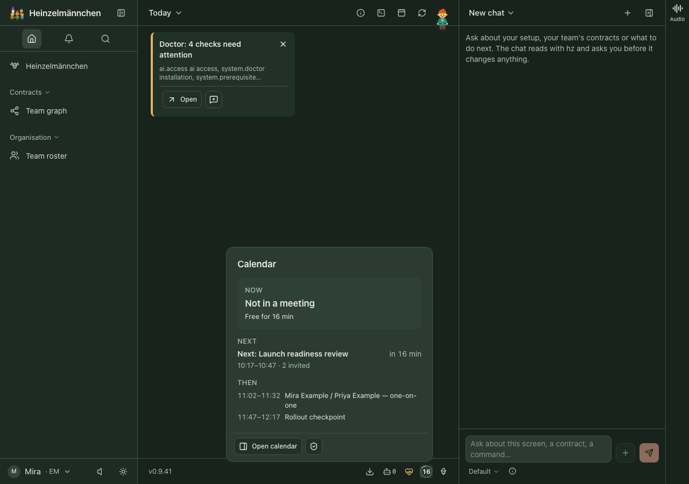
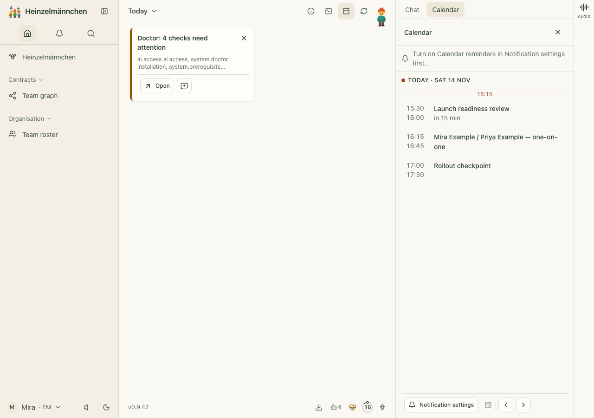
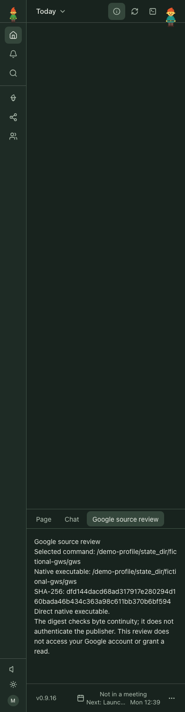
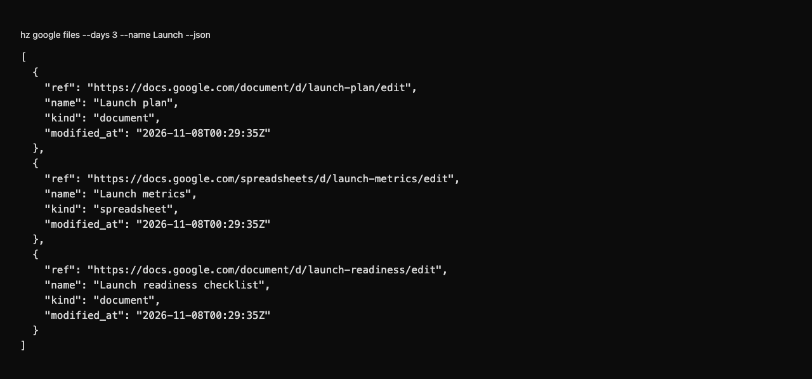
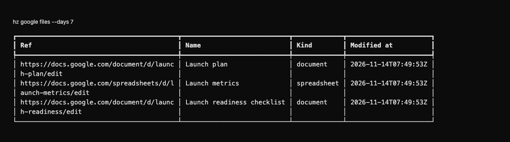
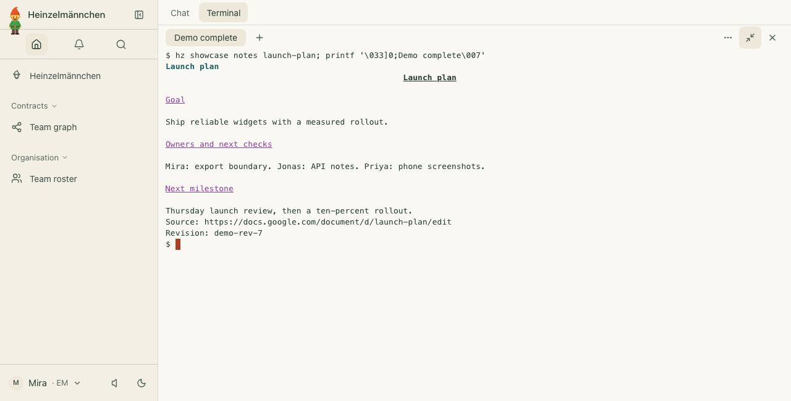
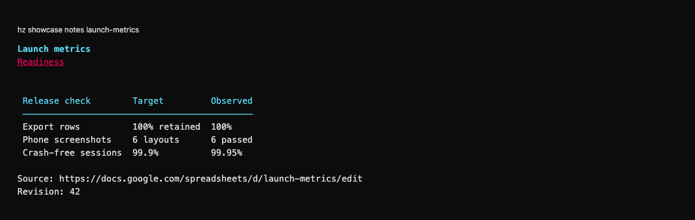
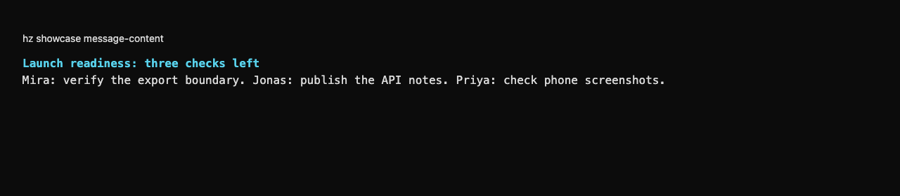

heinzel-google
Isolated demonstration profile · Core 0.9.16 · Review these captures before committing. Click an image to inspect it at full size.

UI · A fictional launch review shows as the next meeting in the footer, read through the Google calendar adapter.
UI · The real Core calendar reads a fictional launch week through the Google adapter; no Google account is contacted.
UI · Inspect a fictional selected-source identity as the Google source review panel shows it.
CLI · Inspect a three-day launch-file query as structured data — actual Google operation, fictional Workspace replies.
CLI · Try a seven-day file query — fictional replies demonstrate invocation, not verified server-side filtering.
CLI · Read a fictional Google Doc through the real adapter; this showcase command exists only in the documentation fixture.
CLI · Read a fictional Sheet through the real adapter; this showcase command exists only in the documentation fixture.
CLI · Read a fictional message through the real Gmail adapter; this showcase command exists only in the documentation fixture.